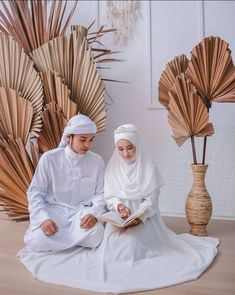

Fauzan Argantara
&
Annanta xenina
Akad
"Pernikahan bagaikan rantai dari cincin emas, diawali dengan secercah sinar terang dan di akhiri oleh keabadian"
Bekasi, 25 maret 2023
JL. flowerwest bintara jav
08.00 WIB
Reception
"Kita jatuh cinta bukan karena menemukan orang yang sempurna, melainkan karena melihat kesempurnaan pada orang yang tidak sempurna."
Bekasi, 26 Maret 2023
JL. bintara jaya 8 gang. hj. mahmud Rt 09/Rw 04
09.00 - 20.00 WIB
Acara
| No | Jam | Keterangan |
|---|---|---|
| 1. | 09.00 | pembukaan |
| 2. | 10.00 | Sambutan keluarga calon pengantin pria |
| 3. | 10.45 | Sambutan balasan |
| 4. | 11.00 | Acara serah terima |
| 5. | 11.30 | Seserahan |
| 6. | 12.30 | penerimaan Pengantin pria |
| 7. | 13.00 | Acara ijab Kobul |
| 8. | 13.30 | Doa Nikah |
| 9. | 13.45 | Serah terima mahar |
| 10. | 14.00 | Nasihat pernikahan |
| 11. | 14.45 | Sungkeman |
| 12. | 15.00 | Sesi foto bersama |
Buku Tamu
Lokation
Galeri&story
 |
Berawal dari pertemuan yang hanya bisa melihat mata karena terhalang kain yang menutupi seluruh wajah dan pakaian yang menjaga mu terlihat sangat istimewa. Berawal dari pertemuan singkat itu aku bisa melihat mata yang rasanya ingin terus tatap, mulai dari pertemuan itu lah aku mulai membujuk dan berdoa pada sang pencipta wanita istimewa seperti mu. |
Dan aku yang berusaha menutupi rasa kagum kepada seseorang karena keteguhanya dalam hal yang melibatkan iman dan islam. Dia yang mampu membuat aku bertanya kepada allah apakah ia seseorang yang di takdirkan untuk ku, untuk menuntun ku ke surga mu, yang mampu mengimami ku mampu membuat hidup ku indah dunia dan akhirat. |
|
Dulu ku palingkan diri dari cinta, hingga kau hadir ubah sagalanya, dan akhirnya aku menetapkan dan memantaskan diri untuk memilih wanita se istimewa mu dengan sedikit perkenalan dan pertemuan singkat akan ku yakini bahwa pilihan ku menetap pada dirimu. akan ku bawa dirimu dan seluruh keluarga kita menuju surga yang sudah di siapkan allah, dan akan kujadikan kau wanita paling bahagia di dunia dan akhirat. Dan inilah janji ku kepada mu, sepanjang hidup bersamamu. |
|
|  | Pertemuan singkat yang membawa aku & kamu ke dalam suatu hal yang sangat membahagiakan, dan dari pertemuan singkat itu juga aku medapatkan pendamping yang sempurna di mata ku dan keluarga, dengan ini juga aku menjatuhkan hati ku pada mu. |